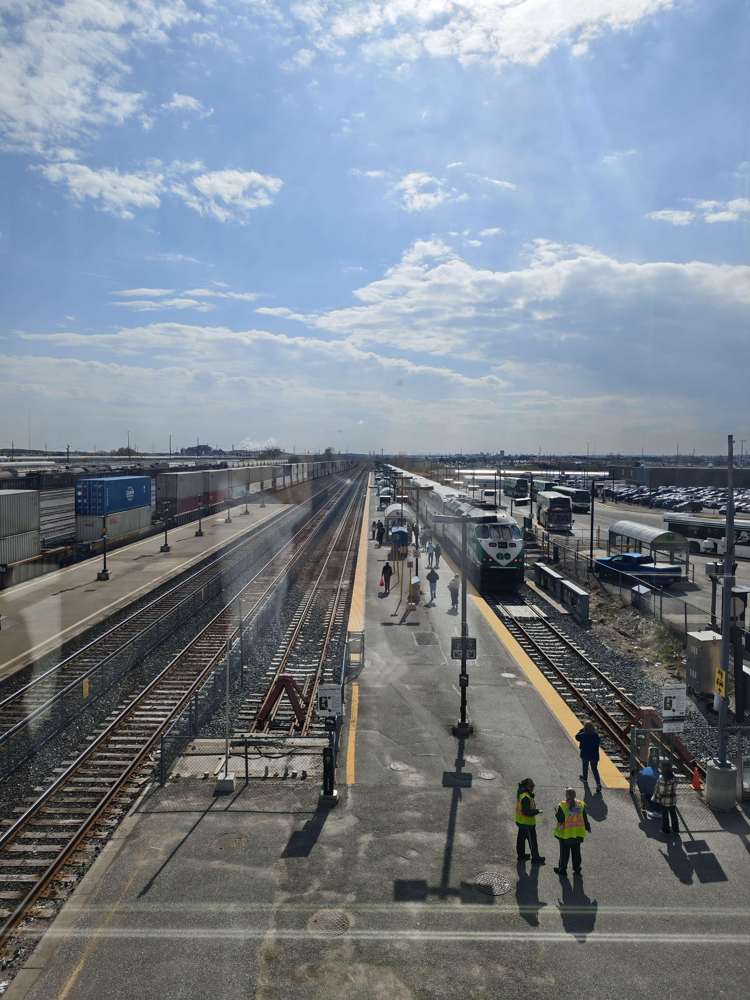
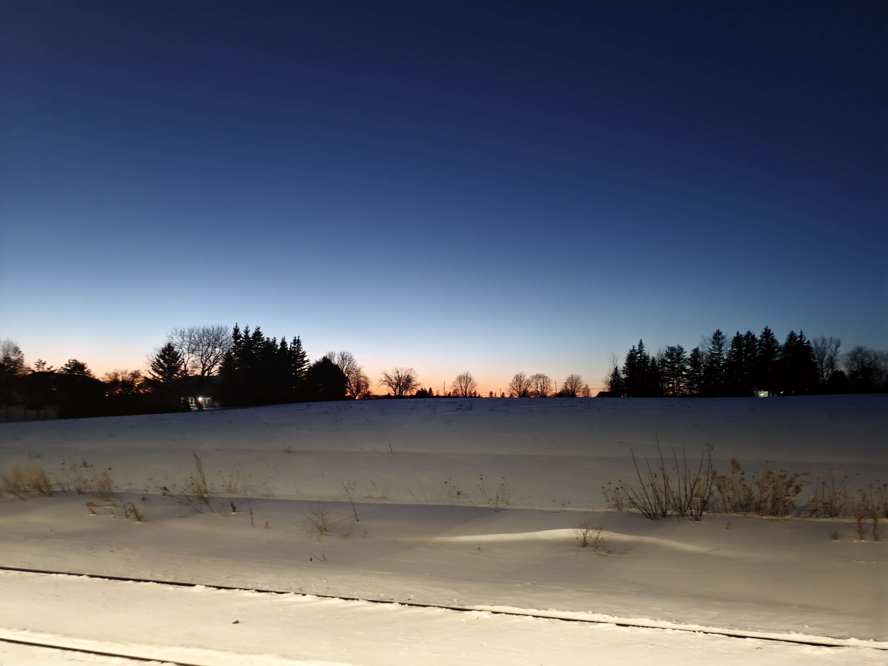
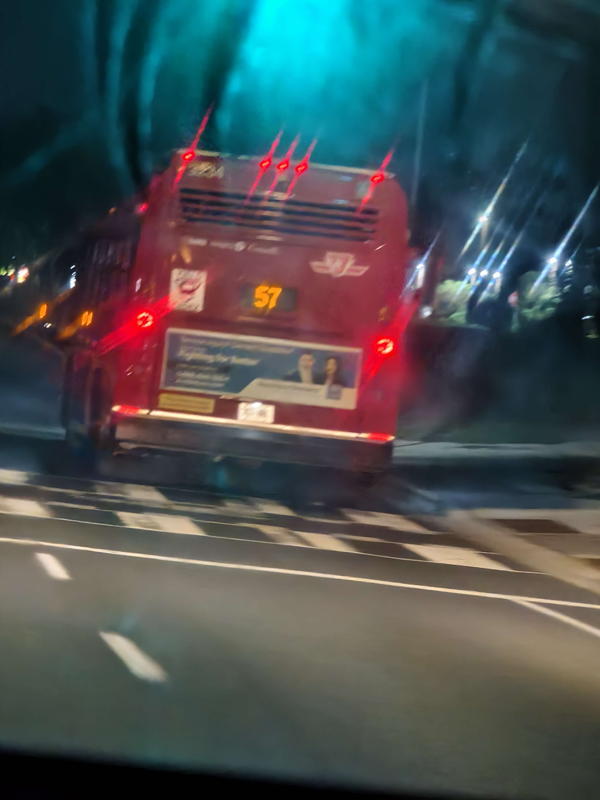
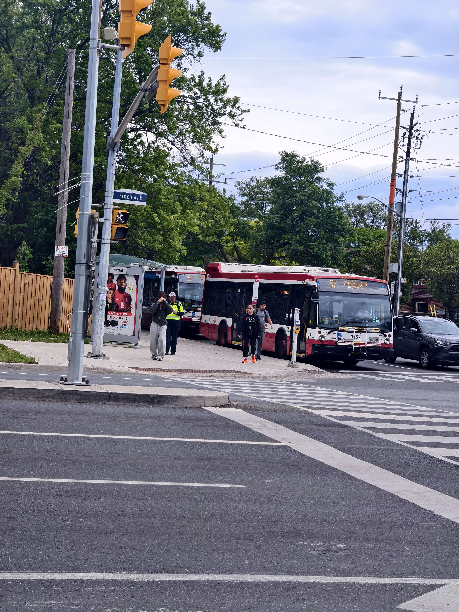
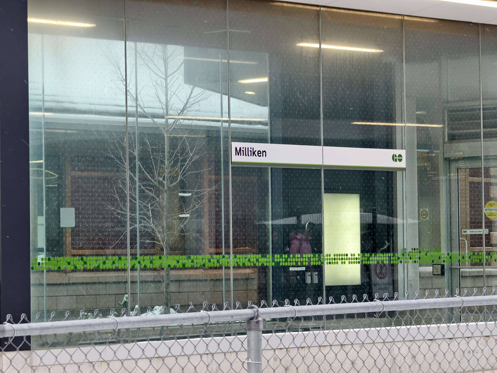
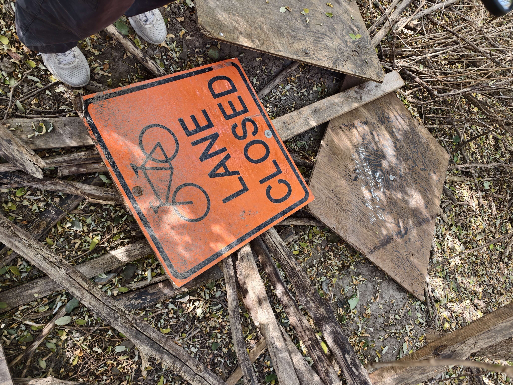
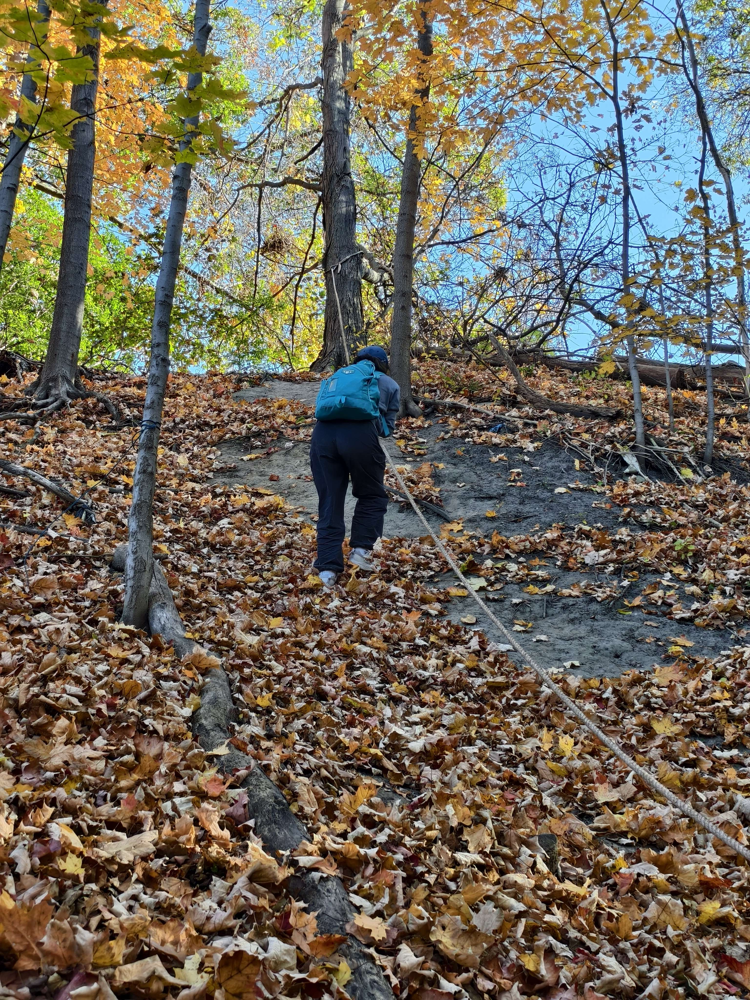
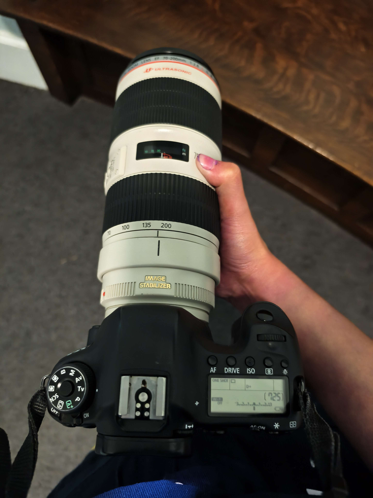
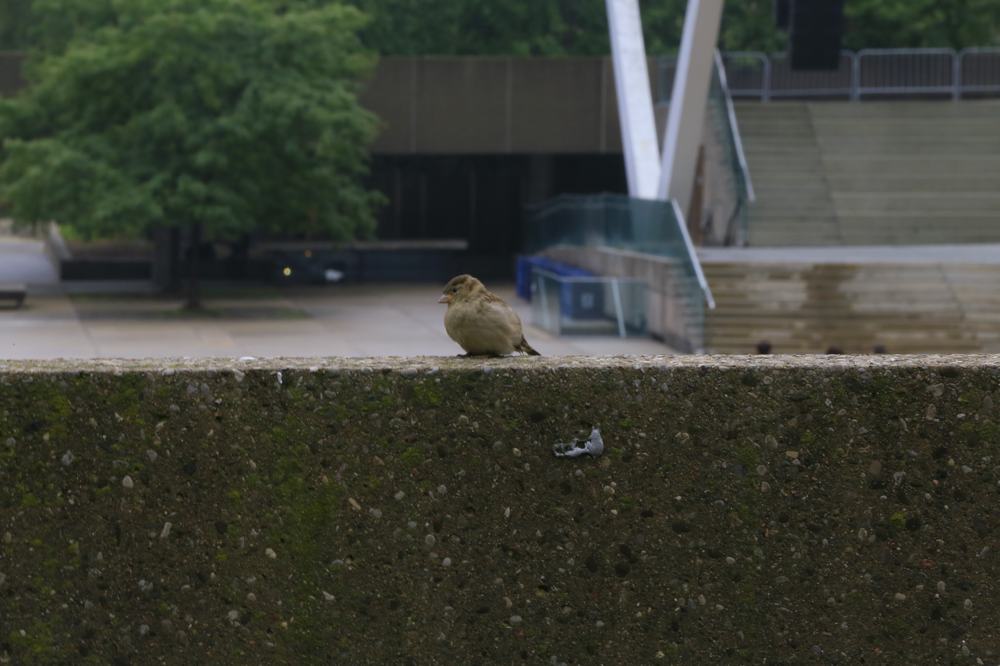

Projects Unrelated to Coursework
I have done a lot of intriging experiments, labs, and design team projects! Still, there are also a lot of personal projects that I want to pursue, such as keeping this living Portfolio alive. But this section of the portfolio will mainly focus on transit related projects that I want to complete sometime in the future.
Some of these "projects" are not necessarily at the same intensity of those done in courses, mostly because they're passion projects and I'd prefer not to give myself such a strict rubric! Instead, I see them as things I look forward to do outside of university as a way to destress or improve my mental during heavy midterm seasons.
Taking the GO Train across the GTA
Everyday, I have to take the Stouffville train to go to the University of Toronto because I live in Scarborough. I was always really grateful to have this option, since I know some of my friends are either forced to take TTC or live in residence. But another problem was that some people just didn't know the option existed, and in my opinion, the GO Train stations aren't super obvious - they're sometimes in the middle of nowhere. Therefore, this project revolves taking every GO Train line to get more familiar with the train routes, and even a couple of GO buses if I get the opportunity to!

Once I arrived at the terminals, I spent some time exploring the region a little. I was able to note down differences in local transit compared to Toronto. Most notably, I observed how the streetcars in Kitchener-Waterloo had their own priority and train signals. Thus, they were much more efficient that the streetcars in downtown Toronto. But I also recognized that perhaps during the time the infrastructure was built, Toronto was unable to do the same thing... (still, the 506 Carlton is really unpredictable and slow)

There are also some GO stations that don't get service outside of specific hours, and instead must rely on the GO Buses or other local transit. It was quite an experience taking the buses for the first time, because the routes are not linear like the trains, so I spent a lot of time running to the correct platform and staring at Google Maps.

Clumping 57 Midland Buses
The 57 Midland Bus, which connects Milliken Station (Steeles) to Kennedy Station, is a line I frequently take. However, I noticed that every time I check the arrival times for the bus, they're clumped together nearly 80% of the time. This means that the next buses will arrive within minutes of each other, which can be either 2, 3 minutes or 19, 20 minutes. This does not align at all with the TTC schedule, which states that there should be service every 10 minutes or better!



I wanted to figure out where on the route was most prone to delaying or speeding up buses. Whenever I took the bus down Midland Avenue, it seemed to go at a steady pace, so I inferred that the traffic may have come from the bus entering the Milliken and Kennedy Stations.

Birdwatching through Transit
Birdwatching is one of my favourite past-times to do because I get to dive into the nature and explore! I usually do this with my friends, so transit helps us get to parks in the GTA like Rouge Valley, Don Valley or L'Amoreaux.

I also get a pretty good workout in these adventures, either from biking, hiking, or carrying my heavy camera everywhere! I always have to adapt to bringing the camera gear everywhere because I don't want to miss out on any good pictures! But of course, sometimes it's good to spend the time just appreciating nature instead of trying to capture every moment of it.


Birdwatching is probably something I will enjoy for the rest of my life as long as I have the physical capabilities for it! And it's thanks to transit being available that I can travel to park locations with my friends. I do hope to be able to go on a road trip with them to see further places one day.

Pursing Transit in the Future
Transportation is indeed the field I want to pursue in my degree, and thus I try to do as many transit related activities as I possibly can! Apart from being a member of the University of Toronto Institute of Transportation Engineers, I also frequently go trainspotting with my friends to explore the infrastructure and transportation systems
I'm looking forward to many transit projects in the future, such as the development of Finch GO on the Stouffville line, and my goal is to contribute to these projects in the future.